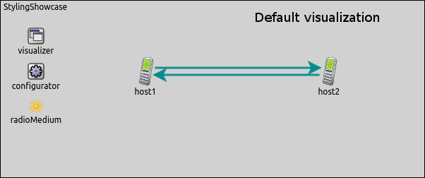
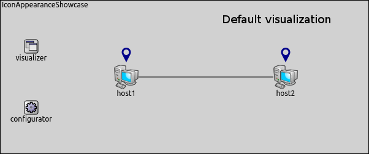
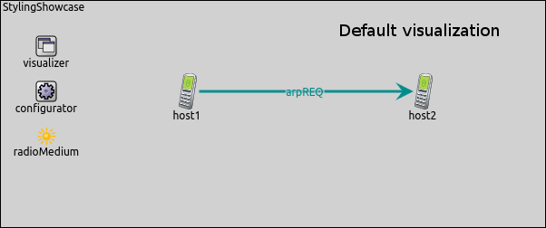

INET version: 3.6
Source files location: inet/showcases/visualization/styling
In the following section, we show how to change the style of the lines and arrows in INET. In this showcase, we use DataLinkVisualizer, but in INET there are many visualizers which can be customized by setting line styling parameters.
The default values of the line styling parameters and a short description can be found in the corresponding NED files. For example, DataLinkVisualizer default settings can be found in the LinkVisualizerBase.ned file.
We use the following configuration to change the style of the data link activity arrow:
We can set the lineColor parameter by setting its value to a certain color. It is possible to set the line color as RGB value e.g. the "blue" color is equal to "#0000FF". The lineStyle parameter can be set to "solid", "dotted" or "dashed". We can set the width of the line by setting the lineWidth parameter. The larger the number that we set, the thicker the line will be. If there are more than one lines between the same nodes, we can change the space between lines by setting the lineShift parameter. By setting the lineContactSpacing parameter, we can change the space between the node and the arrow head.
Move your mouse over the image to see the differences between the default and the customized line style.

The line color has changed to blue and the line style has changed to dashed. The lines have been thicker and the space between the lines has increased. The space between the arrow head and the node has increased too.
We may use another visualizer which has line styling parameters like PhysicalLinkVisualizer or RoutingTableVisualizer as well. In this showcase, the point is customizing the appearance of the arrow.
A short description about line styling parameters can be found in the LinkVisualizerBase.ned, in the PathVisualizerBase.ned, in the MobilityVisualizerBase.ned, in the MediumVisualizerBase and in the RoutingTableVisualizerBase.ned files.
In the following section we demonstrate how to change the appearance of icons in INET. In this showcase we use TransportConnectionVisualizer, but in INET there are more visualizers which has parameters to customize icon.
We use the following configuration to change the appearance of the transport connection icon:
Move your mouse over the image to see the differences between the default and the customized icon appearance.

The names of the parameters are expressive. By setting the icon parameter, we can set an image which indicates that there is transport connection between the nodes. We can set a list of colors as the color of the icon by setting the iconColor parameter. Some visualizers set the color and the colorization amount of the icon by using iconTintColor and iconTintAmount parameters.
We may use another similar visualizer which has icon appearance parameters like Ieee80211Visualizer or PacketDropVisualizer as well. In this showcase the point is customizing the appearance of the icon.
A short description about icon appearance parameters can be found in the TransportConnectionVisualizerBase.ned, in the Ieee80211VisualizerBase.ned, in the LinkBreakVisualizerBase and in the PacketDropVisualizerBase.ned files.
In the following section we demonstrate how to customize fonts in INET. In this showcase we use DataLinkVisualizer, but in INET there are more visualizers which has parameters to customize fonts.
We use the following configuration to change the appearance of the fonts:
Move your mouse over the image to see the differences between the default and the customized icon appearance.

The font family is changed to Arial and the font color is changed to red because of the parameter settings.
We may use another similar visualizer which has icon appearance parameters like Ieee80211Visualizer or InfoVisualizer as well. In this showcase the point is customizing the appearance of the icon.
A short description about icon appearance parameters can be found in the LinkVisualizerBase.ned, in the Ieee80211VisualizerBase.ned, in the InfoVisualizerBase, in the PacketDropVisualizerBase, in the RoutingTableVisualizerBase, in the StatisticVisualizerBase, in the TransportConnectionVisualizerBase, in the PathVisualizerBase and in the InterfaceTableVisualizerBase.ned files.